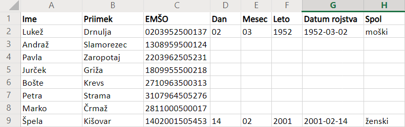

Licenca
To delo je na voljo pod pogoji slovenske licence Creative Commons 2.5:
priznanje avtorstva - nekomercialno - deljenje pod enakimi pogoji.
Celotna licenca je na voljo na spletu na naslovu http://creativecommons.org/licenses/by-nc-sa/2.5/si/. V skladu s to licenco je dovoljeno vsakemu uporabniku delo razmnoževati, distribuirati, javno priobčevati, dajati v najem in tudi predelovati, vendar samo v nekomercialne namene in ob pogoju, da navede avtorja oziroma avtorje in izdajatelja tega dela. Če uporabnik delo predela, kar pomeni, da ga spremeni, preoblikuje, prevede ali uporabi to delo v svojem delu, lahko predelavo dela ponudi na voljo le pod pogoji, ki so enaki pogojem iz te licence oziroma pod enako licenco.

Naloge
6
V občini Višnja Gora pripravljajo elektronski matični register občanov. Register je tabela v programu za delo s preglednicami, kot ga prikazuje spodnja slika:

Tabela vsebuje ime in priimek občana ter enotno matično številko občana – EMŠO. Za potrebe urejanja po datumu rojstva želijo dodati še datum rojstva v obliki leto-mesec-dan (LLLL-MM-DD). Ta podatek se bo nahajal v stolpcu G.
(a) Najprej v stolpce D, E in F iz EMŠO številke izlušči ločeno dan, mesec in leto rojstva občana (uporabi funkcije MID, IF in CONCATENATE). Sestavi samo eno formulo in jo skopiraj po ostalih celicah.
(b) Nato v stolpcu G sestavi datum rojstva v ustrezni obliki (uporabi vmesne rezultate iz stolpcev D, E in F ter funkcijo CONCATENATE). Sestavi samo eno formulo in jo skopiraj po ostalih celicah.
(c) Nazadnje v stolpcu H izpiši spol občana (uporabi funkciji MID in IF). Sestavi samo eno formulo in jo skopiraj po ostalih celicah.